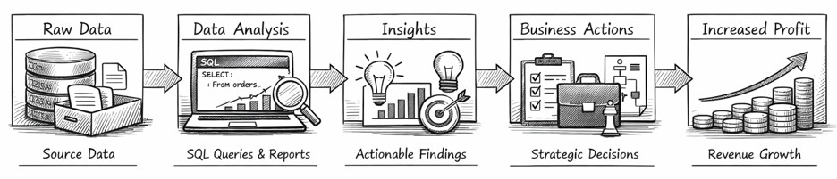

SQL Data Exploration Project — Restaurant Orders Analysis
- © Viviane Santos
Description: This project focuses on exploring and analyzing a restaurant’s order data using SQL.
The goal was to practice essential analytical SQL commands such as filtering, grouping, aggregating, joining tables,
and identifying key insights about menu items, customer behavior, and order patterns.
🔍 Objective 1: Explore the Menu Items Table
-
- Count total items on the menu.
- Identify least and most expensive items.
- Count dishes per cuisine category.
- Calculate average price per category.
- Identify least and most expensive Italian dishes.
-
- Determine the date range of the dataset.
- Count total orders and total items ordered.
- Identify orders with the highest number of items.
- Count how many orders had more than 12 items.
-
- Join menu_items and order_details tables.
- Identify most and least ordered items.
- Determine most popular categories.
- Find top 5 highest-spend orders.
- View details of the highest-spend order.
-
- How much was the most expensive order in the dataset?
-
- MySQL — main tool for querying and analysis.
-
- How to structure SQL queries for real analytical workflows.
- How to explore datasets using aggregations and grouping.
- How to combine tables to extract meaningful business insights.
- How to analyze customer behavior using SQL alone.
📂 From Data to Business Value
